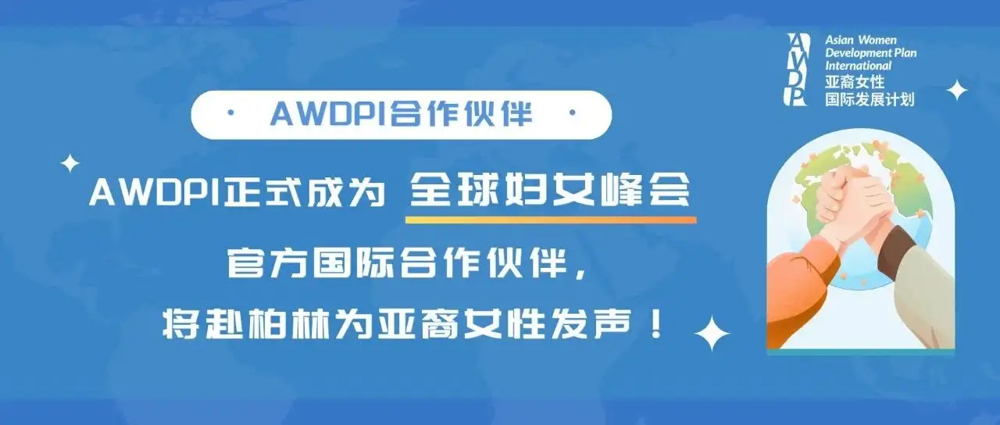
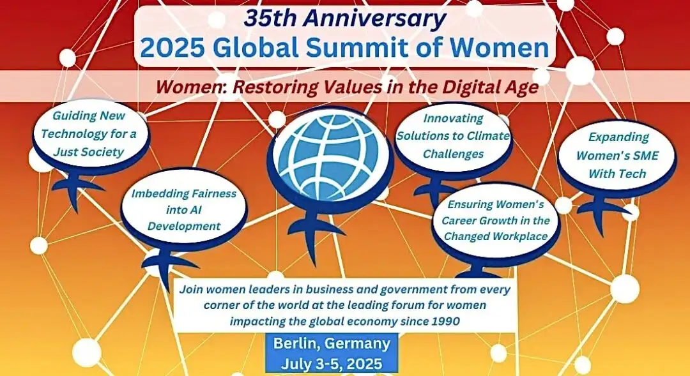
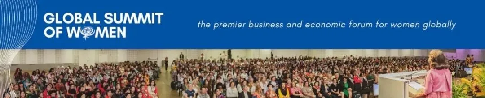
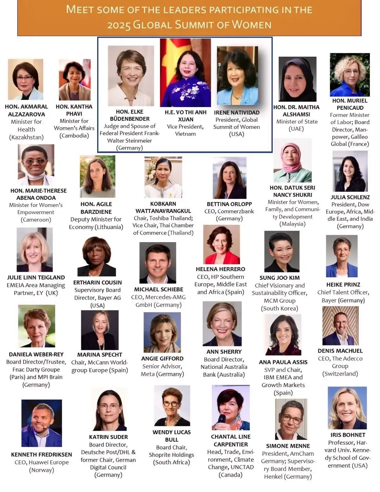
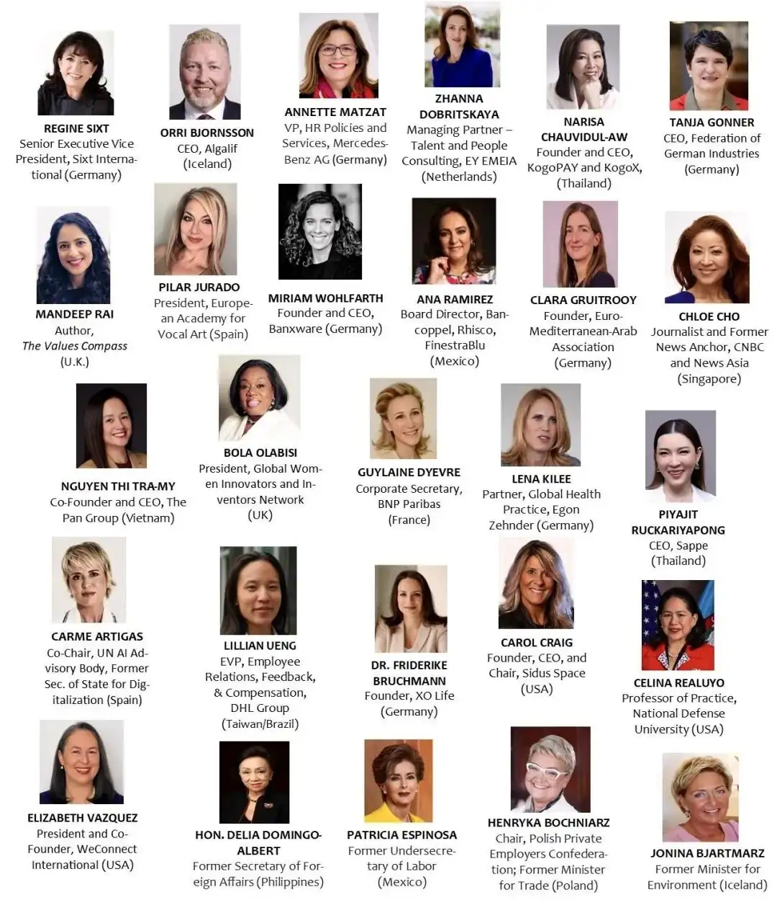

AWDPI已正式加入全球妇女峰会（Global Summit of Women）的国际合作网络，成为其官方“国际合作伙伴”（International Partner）。
7月3日至5日，AWDPI将派代表团前往德国柏林，与来自全球各地的杰出女性领袖围绕“女性：在数字时代重塑价值”这一主题展开讨论。


“女性达沃斯”邀你共同应对性别平等新挑战

全球妇女峰会创办于1990年，是全球最具影响力的跨国女性经济论坛之一，被誉为“女性达沃斯”。
峰会每年轮流在不同国家、地区举办，吸引来自政府、企业、学术界与非营利组织的千余名女性领袖和变革者。
2024年全球妇女峰会现场
>> 向右滑动查看图片
2025全球妇女峰会
Global Summit of Women
举办地点：
德国首都柏林（JW Marriott Hotel Berlin, Germany）
举办时间：
2025年7月3日–5日
参与人群：
预计有来自逾90个国家的高层代表出席，包括政府部长，联合国组织代表，就职于世界500强企业的女性CEO，以及青年女性创业者。
峰会内容：
涵盖全球趋势、AI与领导力、女性董事会治理、创业发展、社会责任与性别平等等议题，重点探讨女性在数字时代中的角色、价值与应对之道。


链接全球资源，AWDPI将推动“改变”发生
作为致力于提升海外亚裔女性福祉与权利的国际性非营利组织，AWDPI始终坚信只有在全球视野下推动跨文化理解与包容，才能真正实现每一位女性的赋权。
在全球性别议题的热烈对话中，亚裔女性的声音常常被边缘化，甚至被忽视。AWDPI参与此次峰会，正是希望改变这一现状。
“我们不仅带着项目成果前来，更怀揣着愿景与承诺，愿在这场全球女性盛会上，讲述那些尚未被充分听见的故事，建立那些尚未被连接的桥梁，争取那些尚未被赋予的权利。”
在本届峰会中，AWDPI将致力于：
提升国际影响力
通过参与专题论坛与圆桌讨论等形式，全方位展示AWDPI在亚裔女性福祉、领导力发展与权益倡导方面的丰富经验与实际成效。
倡导包容多元
在全球化与技术加速变革的时代，移民女性、跨文化背景女性往往面临性别身份和种族身份的双重歧视。借助此次峰会，AWDPI希望推动主流政策制定者更深刻地理解“双重边缘化”带来的现实困境，促进社会对于跨文化、跨语言、跨地域女性的包容性建设。
链接全球资源
作为一个有着多国合作经验的非营利组织，AWDPI将借此契机与更多国际平台以及致力于多元化的跨国企业等建立战略联系，探索项目共建、研究协作、资金支持等多元合作形式。
促进实质赋权
AWDPI此行的最大愿景是让更多政策制定者、资助机构、企业代表与公众真正听见并理解亚裔女性的处境与需求。
“我们不满足于象征性地参与。
我们渴望真正地改变——
让更多受到家暴的女性走出困境，
让移民女性获得职业技能培训，
让亚裔女性的声音在国际议程中被认真对待。
我们要的不只是‘参与’，而是真正的‘赋权’。”

关注AWDPI，
见证柏林时刻！
AWDPI的柏林之行
不仅是一场参与，更是一次出发。
我们将通过微信公众号
与读者分享峰会的精彩回顾。
让我们一起期待“女性×科技×全球”的精彩交汇！
了解女性如何在数字时代重塑价值，
如何在世界舞台上重新发声。
撰文｜林舒淇
封面&排版｜杜婉婷
图片来源 | globewomen.org